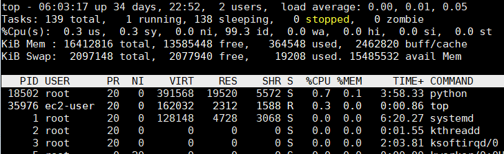
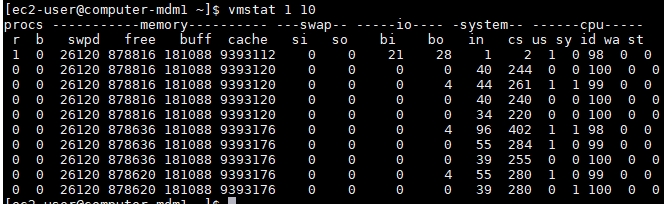
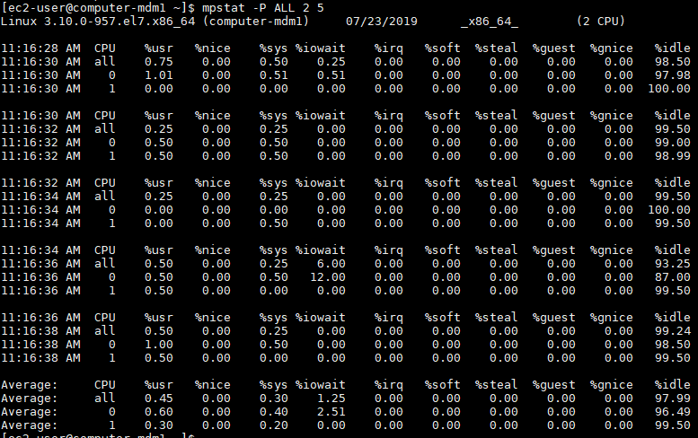

Linux Monitoring
Linux OS has rich set of libraries and mostly easily accessible. There are native libraries/tools which can monitor CPU , Memory , Disk , Network etc. without having license to any expensive Application Monitoring Solution.
No Performance Report is considered complete if you are not providing resource utilization numbers or graph. It helps understand the Infrastructure capability and scaling for current load as well as helps to understand and plan the future load.
CPU :
There are many ways we can extract or monitor CPU Utilization in Linux
a. "top" - Type "top" in command line and hit enter, you will see something like below.

The output from top is divided into two sections. The first few lines give a summary of the system resources including a breakdown of the number of tasks, the CPU statistics, and the current memory usage. Beneath these stats is a live list of the current running processes. This list can be sorted by PID, CPU usage, memory usage, and so on.
The CPU line will look something like this:
%Cpu(s): 24.8 us, 0.5 sy, 0.0 ni, 73.6 id, 0.4 wa, 0.0 hi, 0.2 si, 0.0 st
24.8 us - This tells us that the processor is spending 24.8% of its time running user space processes. A user space program is any process that doesn't belong to the kernel. Shells, compilers, databases, web servers, and the programs associated with the desktop are all user space processes. If the processor isn't idle, it is quite normal that the majority of the CPU time should be spent running user space processes.
73.6 id - Skipping over a few of the other statistics, just for a moment, the id statistic tell us that the processor was idle just over 73% of the time during the last sampling period. The total of the user space percentage - us, the niced percentage - ni, and the idle percentage - id, should be close to 100%. Which it is in this case. If the CPU is spending a more time in the other states then something is probably awry - see the Troubleshooting section below.
0.5 sy - This is the amount of time that the CPU spent running the kernel. All the processes and system resources are handled by the Linux kernel. When a user space process needs something from the system, for example when it needs to allocate memory, perform some I/O, or it needs to create a child process, then the kernel is running. In fact the scheduler itself which determines which process runs next is part of the kernel. The amount of time spent in the kernel should be as low as possible. In this case, just 0.5% of the time given to the different processes was spent in the kernel. This number can peak much higher, especially when there is a lot of I/O happening.
0.0 ni - As mentioned above, the priority level a user space process can be tweaked by adjusting its niceness. The ni stat shows how much time the CPU spent running user space processes that have been niced. On a system where no processes have been niced then the number will be 0.
0.4 wa - Input and output operations, like reading or writing to a disk, are slow compared to the speed of a CPU. Although this operations happen very fast compared to everyday human activities, they are still slow when compared to the performance of a CPU. There are times when the processor has initiated a read or write operation and then it has to wait for the result, but has nothing else to do. In other words it is idle while waiting for an I/O operation to complete. The time the CPU spends in this state is shown by the wa statistic.
0.0 hi & 0.2 si - These two statistics show how much time the processor has spent servicing interrupts. hi is for hardware interrupts, and si is for software interrupts. Hardware interrupts are physical interrupts sent to the CPU from various peripherals like disks and network interfaces. Software interrupts come from processes running on the system. A hardware interrupt will actually cause the CPU to stop what it is doing and go handle the interrupt. A software interrupt doesn't occur at the CPU level, but rather at the kernel level.
0.0 st - This last number only applies to virtual machines. When Linux is running as a virtual machine on a hypervisor, the st (short for stolen) statistic shows how long the virtual CPU has spent waiting for the hypervisor to service another virtual CPU running on a different virtual machine. Since in the real-world these virtual processors are sharing the same physical processor(s) then there will be times when the virtual machine wanted to run but the hypervisor scheduled another virtual machine instead.
b. "vmstat"
vmstat is also one of the inbuilt command in unix, it provides CPU, Memory information as well as information like paging, block IO, disks etc. we can also visualize how many requests are waiting to be served by cpu threads.
Command : vmstat [interval] [count]
Run command like vmstat 1 10 , this will capture vmstat statistics every 1 sec and will run 10 times.

If you want to know more about any command available in unix/linux , run 'man' command.
Ex : man vmstat , below the selected part of the 'man' command.
Procs r: The number of runnable processes (running or waiting for run time). b: The number of processes in uninterruptible sleep.
Memory swpd: the amount of virtual memory used. free: the amount of idle memory. buff: the amount of memory used as buffers. cache: the amount of memory used as cache. inact: the amount of inactive memory. (-a option) active: the amount of active memory. (-a option)
Swap si: Amount of memory swapped in from disk (/s). so: Amount of memory swapped to disk (/s).
IO bi: Blocks received from a block device (blocks/s). bo: Blocks sent to a block device (blocks/s).
System in: The number of interrupts per second, including the clock. cs: The number of context switches per second.
CPU These are percentages of total CPU time. us: Time spent running non-kernel code. (user time, including nice time) sy: Time spent running kernel code. (system time) id: Time spent idle. Prior to Linux 2.5.41, this includes IO-wait time. wa: Time spent waiting for IO. Prior to Linux 2.5.41, included in idle. st: Time stolen from a virtual machine. Prior to Linux 2.6.11, unknown.
c. "mpstat":
Some times its required to understand the CPU usage behavior per core. This can be achieved by using 'mpstat' command.
Run command as mpstat -P ALL 2 5 , this command will print statistics every 2 sec 5 times. output will look like this :

As you can see on top right corner , total number of CPU this server has are 2. Multiple rows of output shows statistics for all the cores as average and per core (watch CPU Column)
Memory :
Disk :
Network :
Sources :